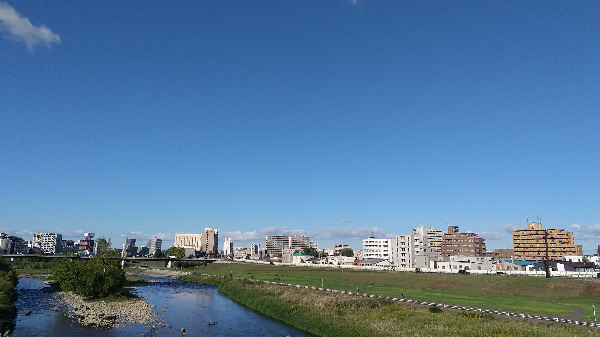
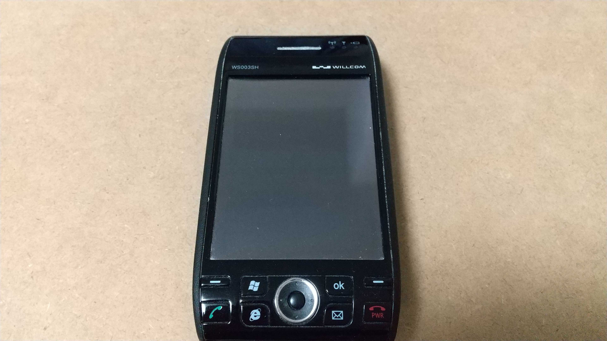
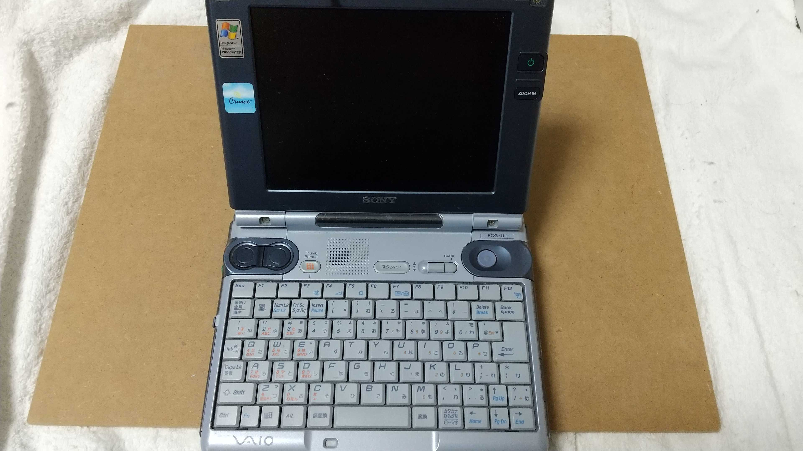
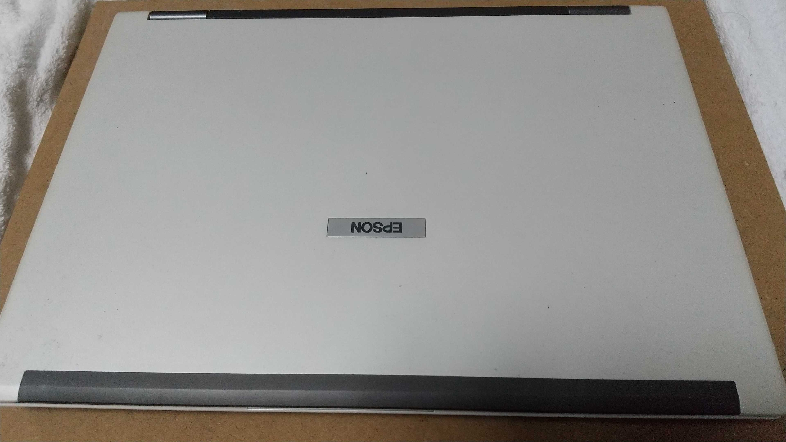
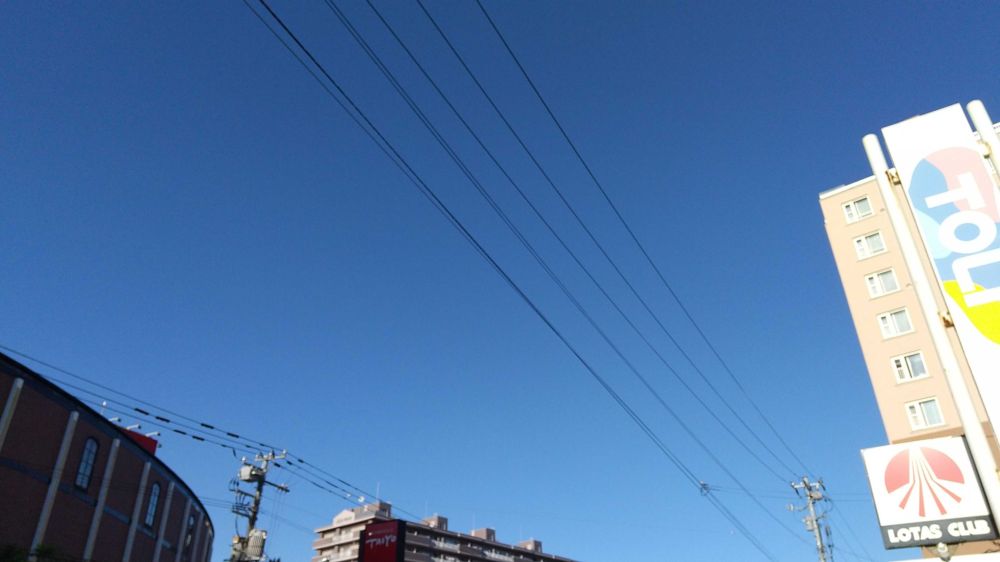
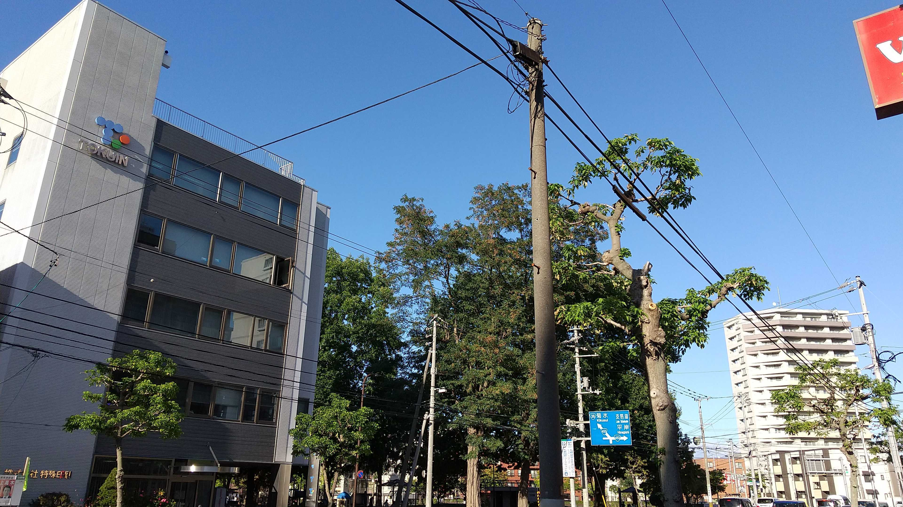

家の近くの橋の上からの空と豊平川。よく晴れた日でした。
about / 自己紹介
hobby / 好きなこと
-
電子機器の分解修理、メンテナンス
昔に買った電子機器、PCを整備して今も使えるようにしています。
その他、動かない電子機器を分解して中身を確認したり、可能なら修理したりしています。
Willcom W-ZERO3
最初に購入したスマートフォン。VAIO U1 6.4inch画面サイズのコンパクトPC
両手でホールドして使っていた。Epson Endeavor NA802
数年前まで使用していたノートPC、Core2Duoなので今はかなり力不足。 -
空の写真
最近とった空の写真とか。
秋晴れの空はきれいな青が出ていてすごく好きです。少し前に撮影した、抜けるような青い空。
左の写真と同じ日に撮影した、よく晴れた青空。
雲が少ないのがいいですね。
別の日に撮影した秋空。
薄い雲が流れていました。